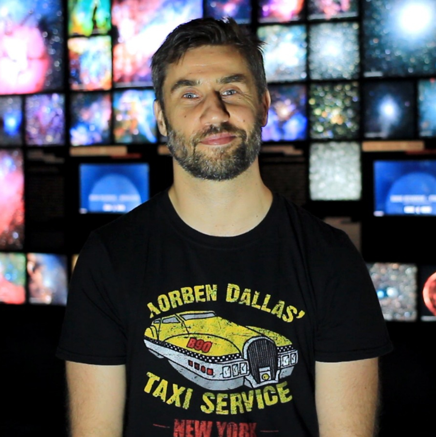
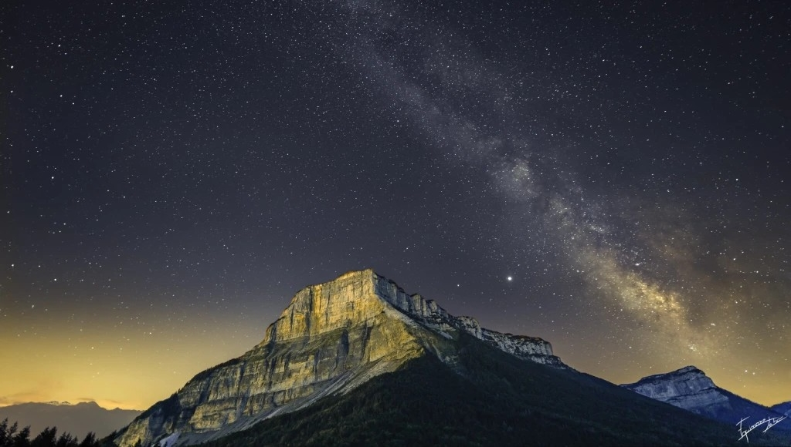
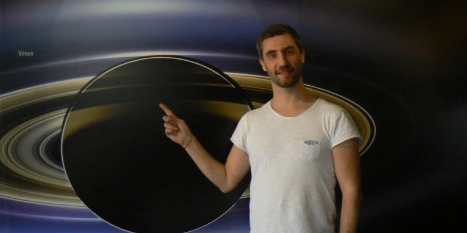
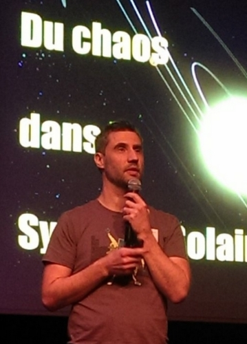
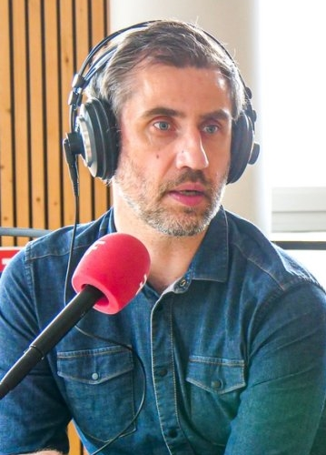

Bonjour et bienvenue.
Vous trouverez ici toutes les informations sur les services que je propose, ainsi que mon parcours.
Que vous cherchiez un conférencier afin de vous faire voyager parmi les plus belles merveilles de l’Univers, que vous soyez une institution scientifique pour animer un workshop ou une table ronde, une rédaction journalistique ayant besoin d’articles scientifiques ou bien encore un média (radio, télévision, podcast,…) en quête d’interventions au micro, vous êtes au bon endroit.
Qui suis-je ?

Voie lactée sur le Mont Granier (Savoie)
Crédit : Alex Meneghin – Club d’astronomie CRABE
Ayant passé mon enfance dans les hautes vallées savoyardes, j’ai eu la chance, très tôt, d’admirer certaines des plus belles nuits étoilées que l’on puisse voir en France métropolitaine.
Et c’est certainement de cet émerveillement que me vient cette envie de partager mon enthousiasme pour le monde qui nous entoure, de l’infiniment grand à l’infiniment petit.
Cette envie ne m’a jamais quitté depuis.
Après un parcours scolaire orienté vers les matières scientifiques, trois années passées en Classes Préparatoires aux Grandes Ecoles d’ingénieur (CPGE), j’ai trouvé ma voie dans le cursus universitaire jusqu’à l’obtention d’un doctorat en Physique Nucléaire appliquée à la Médecine (vous pouvez retrouver ma thèse ici).
Au début des années 2000, j’ai travaillé quatre ans au Centre d’Astronomie de Haute-Provence, dans la ville de Saint-Michel L’observatoire. J’y ai découvert le métier de médiateur scientifique, le plaisir de vulgariser l’astronomie et de transmettre ma passion au(x) public(s).
En parallèle de cette expérience professionnelle, j’ai validé un diplôme universitaire d’astronomie/astrophysique.

Après la soutenance de ma thèse en 2011, j’ai intégré le Planétarium de Vaulx-en-Velin en périphérie de Lyon, en tant que médiateur scientifique et chargé de projet.
J’ai pu y perfectionner mes techniques de vulgarisation et de médiation, mais aussi y découvrir d’autres activités, telles que l’organisation d’évènements, le développement de partenariats institutionnels, et des apparitions régulières dans les médias.

C’est fort de ce parcours et de toutes ces expériences que je vous propose désormais mes services.
Que vous souhaitiez en savoir plus sur les mystères de l’Univers ou que vous ayez un projet de culture scientifique à mettre en place, n’hésitez pas à me contacter pour que nous en discutions ensemble.

Pour en savoir plus sur moi ainsi que mon parcours, n’hésitez pas à regarder le replay de l’émission « Vous êtes formidables » de France 3 où j’ai eu l’immense plaisir d’être invité.
Mes prestations
CONFÉRENCES

Mon catalogue de
conférences existantes.
MÉDIAS

Télévision, radio, internet...
Voici quelques interventions.
GESTION DE PROJETS
Mes services dans l'organistation et l'animation d'évenements.
RÉDACTIONS SCIENTIFIQUES
Mes rédactions et mes articles, en ligne et sur papier.
Pour tout autre projet que vous souhaitez me soumettre, vous pouvez me contacter ici.


.png)